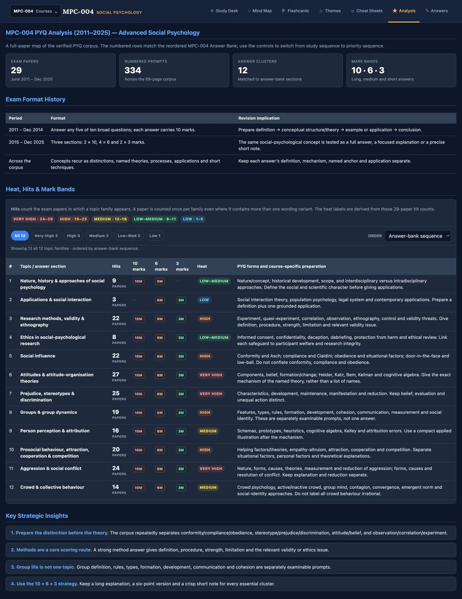

[Draft — refine in your own voice.]
The problem
IGNOU's psychology papers span fifteen years of shifting formats and hundreds of recurring questions — but the study material is scattered, dense, and gives you no sense of what actually matters for the exam. I was revising for my own MA Psychology papers and wanted something calmer and sharper than a stack of PDFs.
"I built the thing I wished existed the night before an exam."
What I built
A single, calm revision environment with a route for every kind of studying:
- Flashcards — focused active-recall decks per course.
- Answer bank — exam-ready answers built around the questions that keep returning.
- Mind map & themes — the full theory map, and threads that connect thinkers across blocks.
- Cheat sheets — printable condensed passes for the final day.
- PYQ analysis — 15 years of past papers mapped into topic frequency, mark bands, and heat, so you revise by what's actually tested.

PYQ analysis — 15 years, 30 exams, topic frequency and mark distribution, with a study profile to resume where you left off.
What happened
What started as a personal tool spread by word of mouth to 200+ students revising for the same exams. [Add a line on feedback / what it changed for them.]
What I'd take forward
[One honest reflection — building for real users you can see, the pull of scope, etc.]